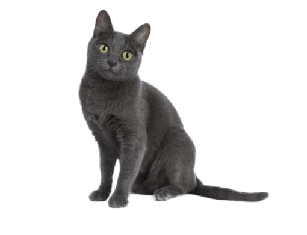

|

แมวสีสวาดหรือแมวโคราช เป็นแมวขนสั้น เป็นมัน เส้นละเอียดและเรียงชิดติดกับผิวหนัง เป็นแมวที่มีสีเดียวคือสีสวาด ซึ่งมีลักษณะเทาอมเขียว แต่หากเป็นสายตาฝรั่งอาจมองว่าเป็นสีเงินอมฟ้า จมูก ริมฝีปากและอุ้งเท้าของแมวสีสวาดมีสีน้ำเงินอมเทาหรือสีม่วง ้แมวสายพันธุ์นี้อาจหน้าตาดูคล้ายเพื่อนสายพันธุ์รัสเซียบลู (Russian Blue) แต่แมวสีสวาด มีขนชั้นเดียวและรูปร่างกลมมากกว่าเพื่อนจากรัสเซีย โดยตาจะมีสีเขียวอ่อนมากกว่าสีฟ้าเข้ม ส่วนหัวจะเป็นทรงหัวใจและมีใบหูใหญ่ ตาโต ดูตื่นตัว ส่วนลำตัวก็แข็งแรง มีกล้ามเนื้อและไม่ได้ตัวยาวเหมือนพันธุ์วิเชียรมาศ (Siamese cat) หรือป้อมเหมือนแมวบริติชช็อตแฮร์ (British Shorthair)
|